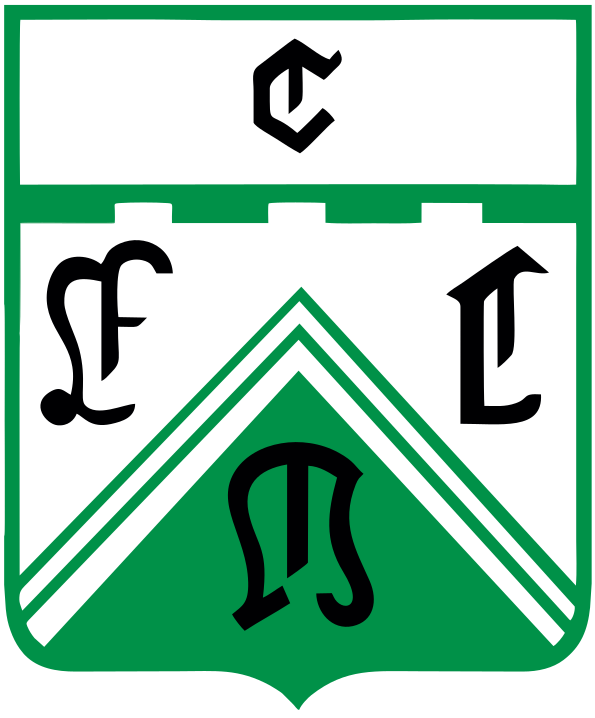

El Club Atlético Ferro Carril Oeste, fundado el 24 de junio de 1934, es una de las instituciones deportivas más emblemáticas de General Pico y de la provincia de La Pampa. Nacido en el corazón del tradicional Barrio Talleres, el club forjó su identidad íntimamente ligada a los trabajadores ferroviarios, adoptando los colores verde y blanco que hoy lo distinguen. Conocidos popularmente como "El Verde" o "La Locomotora de Barrio Talleres", la institución es un verdadero gigante del deporte pampeano.
Históricamente, Ferro se ha destacado a nivel nacional tanto en fútbol, compitiendo durante muchísimos años en el Torneo Federal A y llegando a disputar el antiguo Campeonato Nacional de Primera División en 1984, como también en básquetbol, participando en la Liga Federal. Su estadio principal de fútbol, El Coloso de Barrio Talleres, es uno de los recintos deportivos más importantes y con mayor capacidad de la provincia. Además, el club sostiene un rol social clave, albergando disciplinas como el cestoball, tenis y un fuerte enfoque en las categorías formativas.